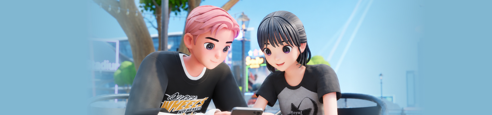

소개
월드 & IP
뉴스
고객지원
한국어
English
다운로드
소개
월드 & IP
뉴스
고객지원
화면 설정
테마
라이트
다크
언어
한국어
English
로그인
다운로드

NEWS
공지사항
공지사항
업데이트
이벤트
검색 대상
제목
제목 + 내용
검색하기
뉴스 검색
전체
진행중
종료됨
검색 결과가 없습니다.
더보기
문은 열려있습니다.
지금 바로 들어와 보세요!
다운로드 바로가기